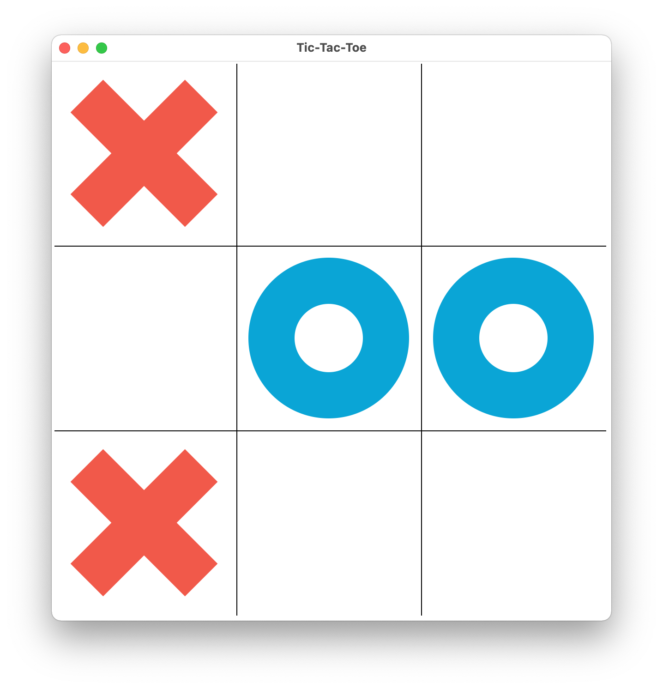
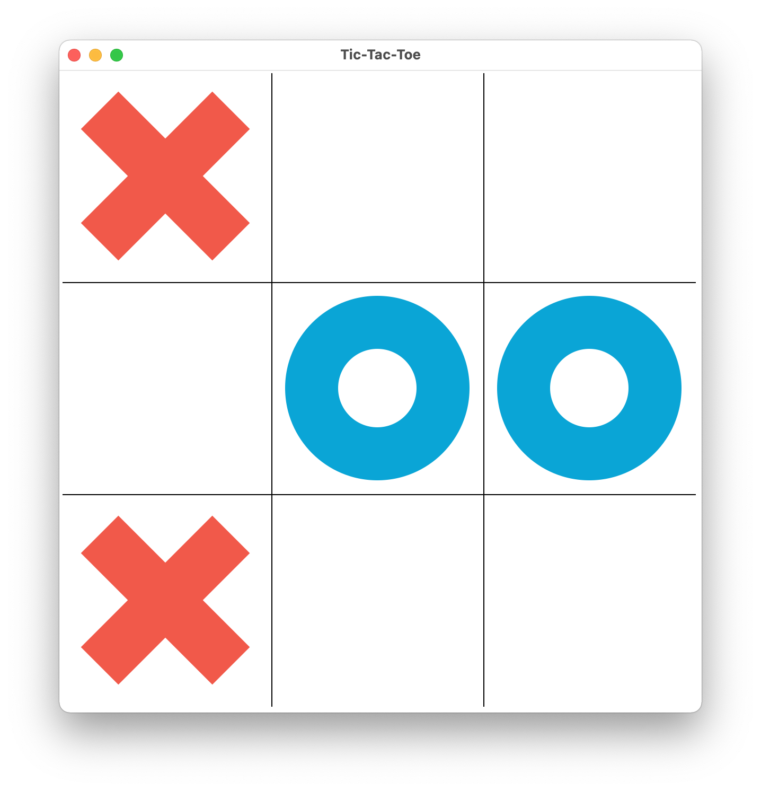

Simple two player Tic Tac Toe game using tkinter and numpy libraries, explores the fundamentals
of GUI development and game logic using Python

Nashville Housing data is cleaned using SQL for making it more standardized and usable for its
analysis. The objective was to fix any data that is incorrect, inaccurate, incomplete,
incorrectly formatted, duplicated, or even irrelevant to the objective of the data set.

The Northwind database about "Northwind Traders" is used to demonstrate SQL skills like data
cleaning, joins, transaction processing and querying data for analysis. The database captures
all the sales transactions that occurs between the Northwind traders and its customers as well
as the purchase transactions between Northwind and its suppliers.

A public dashboard about COVID-19 trends is created in Tableau using SQL queries. Data was
imported to Excel and finally to Tableau to demonstrate the Global Number, Total Deaths per
Continent and Percent Population Infected per Country due to COVID-19.

Statistical data analysis was conducted for Group Health. Microsoft Excel and Tableau was used to
recognize trends among the Group Health patient satisfaction survey data as a method to provide
recommendations in order to improve clinician performance and ensure best physician-patient care
experience. It was a part of my quantitative analysis class at the University of Washington.

Data about disparities amongst various groups of individuals in the Washington state was analyzed
using Tableau to determine if there are any correlations between individuals belonging from a
specific race/ethnicity, with lower education level and, with single parent households
especially as it relates to impoverished populations. It was a part of my quantitative analysis
class at the University of Washington.